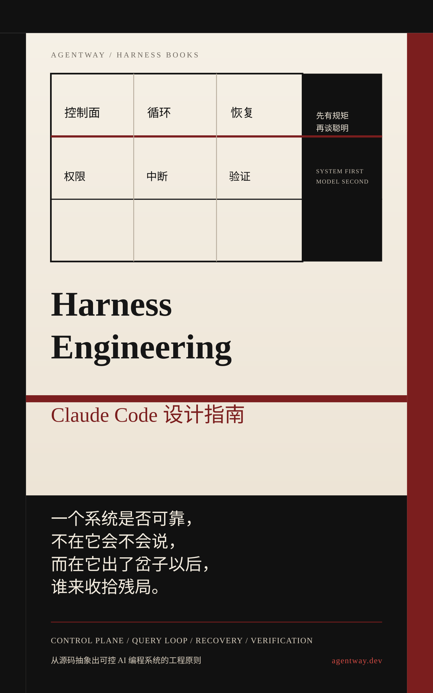

导读

这本书关心的不是“模型会不会写代码”，而是“一个会写代码的模型被放进终端、仓库和团队流程以后，怎样才不会把系统带偏”。
这不是源码注释汇编，也不是产品功能介绍。它关注的是 Claude Code 如何把不稳定模型收束进可持续运行的工程秩序，让控制面、主循环、工具权限、上下文治理、恢复路径、多代理验证与团队制度组织成一套完整骨架。
本书有三个阅读前提：
- 重点不在模型能力，而在 harness 如何组织约束与执行
- 重点不在函数逐条解释，而在运行时结构为什么必须呈现为这种形态
- 重点不在个人技巧，而在这些结构怎样变成团队可以复用的制度
建议阅读顺序：
- 序言 Harness、终端与工程约束
- 第 1 章 为什么需要 Harness Engineering
- 第 2 章 Prompt 不是人格，Prompt 是控制平面
- 第 3 章 Query Loop：代理系统的心跳
- 第 4 章 工具、权限与中断：为什么代理不能直接碰世界
- 第 5 章 上下文治理：Memory、CLAUDE.md 与 Compact 是预算制度
- 第 6 章 错误与恢复：出错后仍能继续工作的代理系统
- 第 7 章 多代理与验证：用分工和验证管理不稳定性
- 第 8 章 团队落地：把一个聪明工具变成可复用制度
- 第 9 章 Harness Engineering 十条原则
- 附录 A 检查清单：把原则落成能执行的约束
- 附录 B 图示：把运行时骨架画出来
- 附录 C 源码地图：本书各章主要依据哪些文件
如果只想先看总判断，可以直接跳到第 9 章。